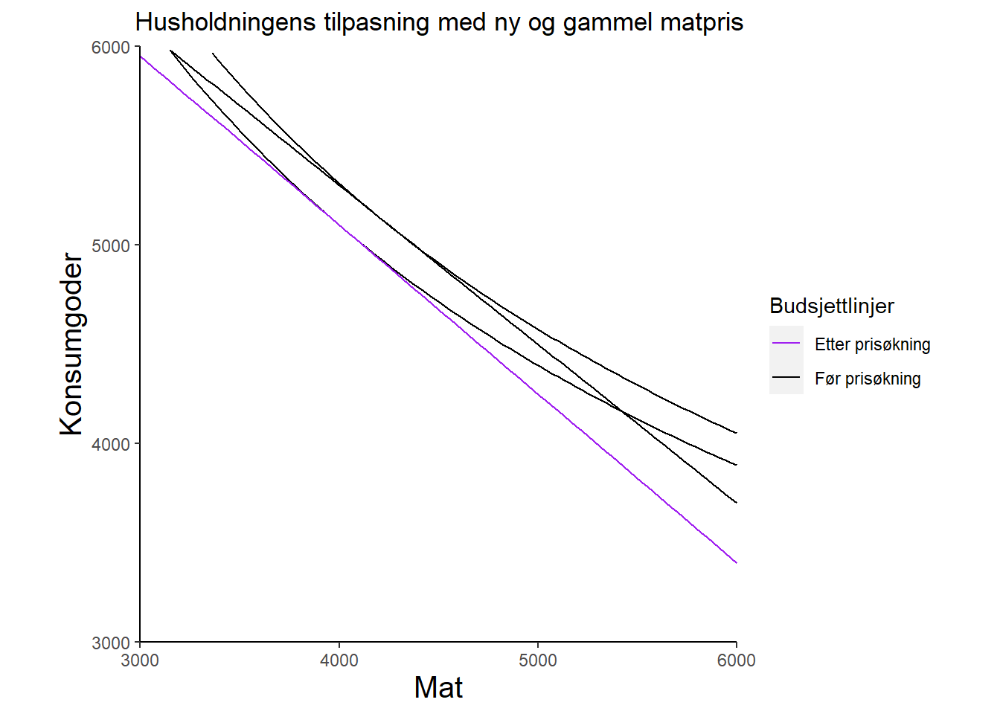

Code
rm(list = ls())
library(tidyverse)
library(rjstat)
library(janitor)
library(gdata)
library(httr)For å gå tilbake til hovedsiden trykker du her.
rm(list = ls())
library(tidyverse)
library(rjstat)
library(janitor)
library(gdata)
library(httr)Oppgave 1a
Forklar: Hvorfor indifferenskurvene heller nedover;
De heller nedover fordi de representerer to goder som konsumenten er indifferent til, det gjør at kurvene heller nedover siden hvis du tar noe bort noe av en gode så må vi legge til noe av den andre goden eller motsatt.
Hvorfor er nytten størst når vi beveger oss i nordøstlig retning i figuren;
Fordi begge akser er postitive goder, gjør at jo lengre ut du kommer fra origo gjør at du får mere nytte av begge godene.
Hvorfor kan ikke indifferenskurver krysse?
Hvis de krysset hverandre ville dem ikke være indifferent, så vi kan derfor konkludere med at det er teknisk umulig. Hvis en indifferenskurve krysser en annen så kan det ikke være fra den samme budsjettlinjen.
x <- seq(0, 10500, by = 1)
df <- data.frame(x)
# Definerer indifferenskurver
I_0 <- function(x) (4000^(5/3))/x^(2/3) # utility level 4000
I_1 <- function(x) (4741^(5/3))/x^(2/3)
I_2 <- function(x) (5500^(5/3))/x^(2/3)
# Plot innstillinger
plot_settings <- theme(axis.title = element_text(size = 20),
plot.title = element_text(size = 20),
panel.background = element_blank(),
axis.line = element_line(colour = "black"))
# Lagrer plottet
figur_1 <- ggplot(df, aes(x)) +
labs(title="Husholdningens tilpasning", x="Mat", y="Konsumgoder") +
plot_settings +
coord_fixed(ratio = 1) +
scale_x_continuous(limits = c(0, 10500), expand = c(0, 0)) +
scale_y_continuous(limits = c(0, 9000), expand = c(0, 0))
# Legger til indifferenskurvene med noen iterasjoner
for (func_name in c("I_0", "I_1", "I_2")) {
func <- get(func_name)
figur_1 <- figur_1 +
stat_function(fun = func, aes()) +
annotate("text", x = 10000, y = func(10000), label = func_name)
}
# Viser figuren
figur_1Oppgave 1b
Skriv en likning som beskriver husholdningens budsjettlinje hver uke med denne inntekten og disse prisene.
Pk= pris til konsum / K = konsum
Pm = pris til mat / M = mat
\[ P_k =1 \]
\[ P_m = 0.80 \]
\[ P_k*k+P_m*m=B \]
\[ B = 8500 \]
\[ k = \frac{-P_m}{P_k}*m+\frac{B}{P_k} \]
\[ k=8500-0.8*m \]
Hva er helningen til budsjettlinjen, og hvordan tolkes denne?
Rent matematisk kan det skrives som;
\[ \frac{-P_m}{P_k}= -0.8 \]
Helningen til budsjettlinjen er prisen av mat målt i enheter delt på prisen av konsum
Oppgave 1c
bud_1 <- function(x) 8500-0.8*x
figur_2 <- figur_1+
stat_function(df,fun=bud_1, mapping = aes())+
annotate("text",x=8900,y=1000, label="bud_1")+
# Optimal tilpasning av konsumgoder og mat
geom_point(x=4250, y=5100, color="cornflowerblue")+
geom_segment(aes(x=4250,xend=4250,y=0,yend=5100), linewidth=0.1, linetype="dashed") +
geom_segment(aes(x=0,xend=4250,y=5100,yend=5100), linewidth=0.1, linetype="dashed")
figur_2Vis i figuren husholdningens optimale tilpasning. Forklar hvorfor dette er en optimal tilpasning.
Den optimale tilpassningen er det punktet budsjettlinjen akkurat treffer indifferenskurven. Punktet der husholdningen får mest fra både konsum og mat.
Husholdningen vil ha både høyere konsumgoder og mer mat, men begge deler er ikke mulig. Den kan gjøre A eller B, men ikke begge. Helning til mulighetskurven kalles MRT, marginal transformasjonsbrøk. Helningen til kurven er større når vi går lenger ned. Så det koster husholdningen mer konsumgoder. Husholdningen må ta et valg som kjennetegnes ved tangeringspunktet. Det optimale valget for husholdningen blir hvor MRT = MSB, hvor marginal transformasjonsbrøk er lik marginal substitusjonsbrøk. Dette er den blå prikken på figuren.
Det viser seg at i en optimal tilpasning kjøper denne husholdningen 5100 enheter konsumgoder og 4250 enheter mat. Hvilken andel av husholdningens inntekt brukes på konsum og på mat?
40% av budsjettet går til mat siden 0.8kr per enhet og det er 4250 enheter blir totalt 3400kr.
3400-8500=5100kr
60% altså 5100kr av budsjettet går til konsumgoder.
url <- "https://data.ssb.no/api/v0/no/table/03013/"
query <- '{
"query": [
{
"code": "Konsumgrp",
"selection": {
"filter": "vs:CoiCop2016niva2",
"values": [
"01"
]
}
},
{
"code": "ContentsCode",
"selection": {
"filter": "item",
"values": [
"KpiVektMnd"
]
}
},
{
"code": "Tid",
"selection": {
"filter": "item",
"values": [
"1999M01",
"1999M02",
"1999M03",
"1999M04",
"1999M05",
"1999M06",
"1999M07",
"1999M08",
"1999M09",
"1999M10",
"1999M11",
"1999M12",
"2000M01",
"2000M02",
"2000M03",
"2000M04",
"2000M05",
"2000M06",
"2000M07",
"2000M08",
"2000M09",
"2000M10",
"2000M11",
"2000M12",
"2001M01",
"2001M02",
"2001M03",
"2001M04",
"2001M05",
"2001M06",
"2001M07",
"2001M08",
"2001M09",
"2001M10",
"2001M11",
"2001M12",
"2002M01",
"2002M02",
"2002M03",
"2002M04",
"2002M05",
"2002M06",
"2002M07",
"2002M08",
"2002M09",
"2002M10",
"2002M11",
"2002M12",
"2003M01",
"2003M02",
"2003M03",
"2003M04",
"2003M05",
"2003M06",
"2003M07",
"2003M08",
"2003M09",
"2003M10",
"2003M11",
"2003M12",
"2004M01",
"2004M02",
"2004M03",
"2004M04",
"2004M05",
"2004M06",
"2004M07",
"2004M08",
"2004M09",
"2004M10",
"2004M11",
"2004M12",
"2005M01",
"2005M02",
"2005M03",
"2005M04",
"2005M05",
"2005M06",
"2005M07",
"2005M08",
"2005M09",
"2005M10",
"2005M11",
"2005M12",
"2006M01",
"2006M02",
"2006M03",
"2006M04",
"2006M05",
"2006M06",
"2006M07",
"2006M08",
"2006M09",
"2006M10",
"2006M11",
"2006M12",
"2007M01",
"2007M02",
"2007M03",
"2007M04",
"2007M05",
"2007M06",
"2007M07",
"2007M08",
"2007M09",
"2007M10",
"2007M11",
"2007M12",
"2008M01",
"2008M02",
"2008M03",
"2008M04",
"2008M05",
"2008M06",
"2008M07",
"2008M08",
"2008M09",
"2008M10",
"2008M11",
"2008M12",
"2009M01",
"2009M02",
"2009M03",
"2009M04",
"2009M05",
"2009M06",
"2009M07",
"2009M08",
"2009M09",
"2009M10",
"2009M11",
"2009M12",
"2010M01",
"2010M02",
"2010M03",
"2010M04",
"2010M05",
"2010M06",
"2010M07",
"2010M08",
"2010M09",
"2010M10",
"2010M11",
"2010M12",
"2011M01",
"2011M02",
"2011M03",
"2011M04",
"2011M05",
"2011M06",
"2011M07",
"2011M08",
"2011M09",
"2011M10",
"2011M11",
"2011M12",
"2012M01",
"2012M02",
"2012M03",
"2012M04",
"2012M05",
"2012M06",
"2012M07",
"2012M08",
"2012M09",
"2012M10",
"2012M11",
"2012M12",
"2013M01",
"2013M02",
"2013M03",
"2013M04",
"2013M05",
"2013M06",
"2013M07",
"2013M08",
"2013M09",
"2013M10",
"2013M11",
"2013M12",
"2014M01",
"2014M02",
"2014M03",
"2014M04",
"2014M05",
"2014M06",
"2014M07",
"2014M08",
"2014M09",
"2014M10",
"2014M11",
"2014M12",
"2015M01",
"2015M02",
"2015M03",
"2015M04",
"2015M05",
"2015M06",
"2015M07",
"2015M08",
"2015M09",
"2015M10",
"2015M11",
"2015M12",
"2016M01",
"2016M02",
"2016M03",
"2016M04",
"2016M05",
"2016M06",
"2016M07",
"2016M08",
"2016M09",
"2016M10",
"2016M11",
"2016M12",
"2017M01",
"2017M02",
"2017M03",
"2017M04",
"2017M05",
"2017M06",
"2017M07",
"2017M08",
"2017M09",
"2017M10",
"2017M11",
"2017M12",
"2018M01",
"2018M02",
"2018M03",
"2018M04",
"2018M05",
"2018M06",
"2018M07",
"2018M08",
"2018M09",
"2018M10",
"2018M11",
"2018M12",
"2019M01",
"2019M02",
"2019M03",
"2019M04",
"2019M05",
"2019M06",
"2019M07",
"2019M08",
"2019M09",
"2019M10",
"2019M11",
"2019M12",
"2020M01",
"2020M02",
"2020M03",
"2020M04",
"2020M05",
"2020M06",
"2020M07",
"2020M08",
"2020M09",
"2020M10",
"2020M11",
"2020M12",
"2021M01",
"2021M02",
"2021M03",
"2021M04",
"2021M05",
"2021M06",
"2021M07",
"2021M08",
"2021M09",
"2021M10",
"2021M11",
"2021M12",
"2022M01",
"2022M02",
"2022M03",
"2022M04",
"2022M05",
"2022M06",
"2022M07",
"2022M08",
"2022M09"
]
}
}
],
"response": {
"format": "json-stat2"
}
}'
hent_indeks.tmp <- url %>%
POST(body = query, encode = "json")
df_kpi <- hent_indeks.tmp %>%
content("text") %>%
fromJSONstat() %>%
as_tibble()Lag en figur som viser utviklingen til disse vektene over tid. Gi figuren en passende tittel, benevning av aksene og legende. Kommentér figuren.
Laster inn datasettet Konsumprisindeks med hovedgruppenivå matvarer og alkoholfrie drikkevarer (03013) fra SSB.
df_kpi_1 <- df_kpi %>%
separate(måned, into=c("year", "month"), sep="M") %>% # fjerner M1,M2 osv setter
mutate(dato = ymd(paste(year, month, "1"))) %>% # de i ny tidsvariabel kalt dato
select(-month) # Fjerner måned variablen den trenger vi ikke
# Bruker year videre for å plotte de årlig senere i oppgavenBegynner å plotte figuren fra dato og verdien for
df_kpi_1 %>%
ggplot(aes(x=year, y=value)) +
# Gjør fargen rød for å jobbe med den som rød videre
geom_point(color="red") +
# Setter theme
theme_minimal() +
# Endrer på tittel størrelse og lager tittel og subtittel
theme(plot.title = element_text(size = 15))+
labs(title="Matvarer og alkoholfrie drikkevarer",
caption="Basert på tabell 03013 fra SSB", y="Vekter(promille)", x="") +
scale_y_continuous(breaks=seq(115,140, by=5))+
scale_x_discrete(breaks = seq(min(as.numeric(as.character(df_kpi_1$year))),
max(as.numeric(as.character(df_kpi_1$year))),
by = 5))
Figuren viser månedlige Konsumprisindeks (KPI) vekter for matvarer og alkoholfrie drikkevarer. Disse vises i promille. For eksempel i år 2000 har vektene for matvarer og alkoholfrie drikkevarer en verdi på 122,3 promille. Dette vil si at av hele KPI tar hovedgruppen matvarer og alkoholfrie drikkevarer 122,3 promille av KPI, av totalt 1000 som KPI vektene i kurven skal summeres til. Man kan også se at siden 1999 har vektene til mat gått ned fra 139.1 til 122.3 promille. Som betyr at endring av hovedgruppen fra denne perioden var på 16,5 promille og at i KPI brukte befolkningen mer av budsjettet sitt på de andre hovedgruppene.
Vi skal sammenlikne disse seriene. For å gjøre dette må du transformere den første serien (I) til årlige observasjoner (beskriv hvordan du velger å gjøre dette), og (II) til prosent (fra promille). Plott seriene på samme figur med passende tittel, benevning på aksene, og legende.
Laster inn datasettet Forbrukerundersøkelsen med hovedgruppenivå matvarer og alkoholfrie drikkevarer (10235) fra SSB.
url_2 <- "https://data.ssb.no/api/v0/no/table/10235/"
query_2 <- '{
"query": [
{
"code": "Forbruksundersok",
"selection": {
"filter": "vs:ForbrukHushold2",
"values": [
"FB2_01"
]
}
},
{
"code": "ContentsCode",
"selection": {
"filter": "item",
"values": [
"AndForbrUtg"
]
}
}
],
"response": {
"format": "json-stat2"
}
}'
hent_indeks.tmp_2 <- url_2 %>%
POST(body = query_2, encode = "json")
df_fbu <- hent_indeks.tmp_2 %>%
content("text") %>%
fromJSONstat() %>%
as_tibble()Grupperer og summerer gjennomsnittet til årene for å få de til årlige observasjoner. Til slutt tar vi å deler vektene på 10 for å få de til prosent fra promille.
df_kpi_årlig <- df_kpi_1 %>%
group_by(year, statistikkvariabel) %>% # grupperer og summerer gjennomsnittet til årene
summarize(mean(value)) %>%
rename(value='mean(value)') %>%
rename(år=year) %>%
mutate(value=value/10)
# Legger datasettene sammen for å plotte de
df_plot <- rbind(df_kpi_årlig, df_fbu)Plotter seriene på samme figur
df_plot %>%
ggplot(aes(x=år, y=value, group=statistikkvariabel, color=statistikkvariabel))+
geom_line()+
# Gjør prikkene svart
geom_point(color="black")+
# Gjør slik at årstallene ikke går over hverandre i x-aksen
scale_x_discrete(guide = guide_axis(n.dodge = 2)) +
# Setter tema
theme_minimal()+
# Lager tittel og sier hvor data er hentet fra
labs(title="Utgifter til matvarer FBU og KPI",
caption="Basert på tabell 03013 og 10235 fra SSB", y="Prosent", x="")+
# Endrer fargene på seriene
scale_color_manual(name="Serier", values = c("cornflowerblue","red"),
labels=c("Forbrukerundersøkelsen", "Konsumprisindeks"))+
theme(legend.position = "bottom")Hva viser figuren?
Den viser årlige KPI vekter for matvarer og alkoholfrie drikkevarer (rød) mot Forbrukerundersøkelsens (FBU) andel av forbruksutgift for matvarer og alkoholfrie drikkevarer i prosent (blå).
Foreslå grunner til at disse to seriene avviker fra hverandre.
FBU er en undersøkelse som ble gjort av Statistisk sentralbyrå (SSB) frem til 2012 og var også grunnlaget for beregning av KPI frem til 2010. Vektene for KPI i figuren er beregnet med basisår 2015=100, mens FBU-serien baseres på løpende priser. Derfor avviker seriene før 2011, selv om FBU var grunnlaget for KPI i disse årene.
FBU tok en liten andel av husholdninger og undersøkte konsum og priser ved hjelp av spørreskjema, dagbok, og kassalapper. I motsetning til dette baseres Nasjonalregnskapets (NR) på kilder som strekkodedata. Mer om dette straks.
Hvorfor gikk KPI-vektene for matvarer mye opp mellom 2010 og 2011?
Fra og med 2011 ble KPI utregnet med NR tall fordi EU kom med en lovendring som gjorde at KPI-vektene ikke kunne regnes ut med talldata som er eldre enn 2 år. (Nytt i KPI, s.40) KPI regnet ut med FBU frem til da hadde på grunn av lavt datagrunnlag beregnet vektene fra gjennomsnittet over 3 år for å få de nye vektene.
En annen grunn kan være at overgangen til NR som kilde gjorde at det også ble endringer i populasjonen som ble tatt med i indeksen. I FBU omfattes alle i alderen mellom 17 til 79 år med unntak av personer bosatt i institusjon. Med NR som vektkilde vil populasjonen endres til å i praksis inkludere alle personer. Og for vektene innebærer dette et økt forbruk av konsum i hovedgruppen matvarer og alkoholfrie drikkevarer med eldre beboere og beboere i institusjoner. Noe som kan gi en god forklaring på hvorfor KPI-vektene for matvarer gikk mye opp mellom 2010 og 2011.
Hvordan har disse vektene utviklet seg fra 2011, og hvorfor?
KPI-vektene til matvarer og alkoholfrie drikkevarer har hatt en nedgang og oppgang mellom 2011 og 2020. Det kan være mange årsaker til at vektene har endret seg. Det kan pekes på at styringsrenten er historisk lav i denne perioden. Klima påvirker også vektene fordi det kan oppstå produksjonsproblemer i sesonger med lite nedbør. Konsumenter bruker mere penger på andre konsumgrupper og dermed mindre på mat og alkoholfrie drikkevarer.
Basert på internasjonale anbefalinger og nasjonale forhold, har Statistisk sentralbyrå (SSB) besluttet at vektene for både KPI og HKPI skal reflektere endringer i konsumet som har oppstått under pandemien. For KPI er det besluttet at vektene bygger på et gjennomsnitt av konsumet i 2019 og 2020. For HKPI, hvor SSB er bundet av EUs reguleringer, vil hele effekten av endret konsumsammensetning i 2020 påvirke vektene. (SSB, 2021)
Ut fra avgjørelsen til SSB om å manuelt justere vektene under pandemien kan vi se at vektene på mat og alkoholfrie drikkevarer øker med ca en prosent fra start av pandemien til nå.
Vi skal se på effekten av en prisøkning på matvarer på husholdningens tilpasning.
Oppgave 3a
Husholdningen fra oppgave 1 merker at prisen på mat øker fra 0,80 kr til 0,85 kr per enhet. Tegn en figur som viser den gamle og den nye tilpasningen. For å tegne figuren i R kan det være nyttig å vite at husholdningen kjøper nå 5100 enheter konsumgoder og 4000 enheter mat i den nye tilpasningen. Lag en ryddig figur som består av to indifferenskurver og to budsjettlinjer, og merk den gamle og den nye tilpasningen i figuren.
axes_2 <- ggplot(df, aes(x))+
labs(title="Husholdningens tilpasning med ny og gammel matpris",
x="Mat",
y="Konsumgoder")+
theme(axis.title = element_text(size = 15),
plot.title = element_text(size = 13, hjust = 0.39),
panel.background = element_blank(), # hvit bakgrunn
axis.line = element_line(colour = "black"))+ # sett inn akselinjer
coord_fixed(ratio = 1)+ # lik skala for x og y aksen
scale_x_continuous(limits = c(3000, 6000), expand = c(0, 0))+
scale_y_continuous(limits = c(3000, 6000), expand = c(0, 0))
#lager en ny isokostnadslinje
I_4 <- function(x) (4627^(5/3))/x^(2/3)
figur_3 <- axes_2 + #ny figur + kostnadslinje
stat_function(df, fun=I_1, mapping = aes()) +
stat_function(df, fun=I_4, mapping = aes())
bud_2 <- function(x) 8500-0.85*x #funksjon for ny matpris
# Lager ny figur
figur_4 <- figur_3+
# Plotter budsjettlinje 1 og 2, gir de fargene lilla og svart
# legger av fargen rød til en senere budsjettlinje
geom_function(df,fun=bud_1, mapping = aes(color = "Før prisøkning"))+
geom_function(df,fun=bud_2, mapping = aes(color = "Etter prisøkning"))+
scale_colour_manual("Budsjettlinjer", values = c( "purple","black","red"))
figur_4
Den svarte linjen viser husholdningens tidligere nyttenivå, den lilla viser nyttenivået fra samme budsjett, men med tilpassningen ut fra de nye prisene for mat.
Oppgave 3b
Vis i figuren hvordan den totale nedgangen i husholdningens konsum av mat kan dekomponeres i en inntekts- og substitusjonseffekt.
# Lager ny figur med linjer og prikker
figur_5 <- figur_4 +
geom_point(x = 4250, y = 5100)+
geom_point(x = 4000, y = 5100)+
geom_segment(aes(x=4250,xend=4250,y=3000,yend=5100), size=0.1, linetype="dashed") +
geom_segment(aes(x=4000,xend=4000,y=3000,yend=5100), size=0.1, linetype="dashed") +
geom_segment(aes(x=3000,xend=4250,y=5100,yend=5100), size=0.1, linetype="dashed") +
geom_segment(aes(x=3000,xend=4000,y=5100,yend=5100), size=0.1, linetype="dashed") +
annotate("text",x=3940,y=5000, label="B")+
annotate("text",x=4350,y=5170, label="A")
figur_5Myndighetene vurderer å kompensere husholdningen for prisøkningen på matvarer. Vis i figuren hvor mye inntekt husholdningen bør få tilført for å få det like bra som før prisøkningen. (Hint: ettersom prisen på konsumgoder er 1 kan dette beløpet vises i figuren som en vertikal avstand, dvs x konsumgoder koster x kr).
# Lager den nye budsjettlinjen, med kompensasjon og gir den fargen rød fra
# tidligere kode
bud_5 <- function(x) 8500-0.85*x+212.5
# Plotter siste punkt med budsjettlingen, punkter og linjer
figur_6 <- figur_5+
stat_function(df, fun=bud_5, mapping = aes(color = "Med kompensasjon fra stat"))+
geom_point(aes(x=4125, y=5200)) +
geom_segment(aes(x=4125, y=3000, xend=4125, yend=5200), linetype="dashed") +
geom_segment(aes(x=3000, y=5200, xend=4125, yend=5200), linetype="dashed") +
annotate("text",x=4125,y=5350, label="C")
figur_6I Case 3 har dere sett hvordan KPI beregnes, og dette er også diskutert i Johannessen (2014) (avsnitt som heter “Et teoretisk utgangspunkt”) og Langer og Johannessen (2010) side 41. Man legger til grunn en versjon av en Laspeyres indeks. Beskriv med ord hvordan en Laspeyres indeks settes sammen. Vis i din figur fra 3b(ii) hvor mye inntekt husholdningen ville få fra myndighetene om denne metoden legges til grunn. Hva antas om substitusjonseffekten her?
Substitusjonseffekten gjør at konsumenten velger kombinasjoner av goder i punkt C, i steden for A. konsumenteten får mer Konsumgoder og mindre av Mat. Da konsumgodene har blitt relativt billigere. Dette dersom de blir kompensert for prisøkningen. Dersom husholdningen skal opprettholde nyttenivået, må de bli kompensert med 212.5 kr i uken.
Ved å regne ut Laspeyres indeks, får vi at økingen har gått fra 100 til 102,5. Det vil si en økning på 2,5 prosent. Sammenliknet med budsjettet til husholdningen i dette eksempelet er det lite avvik, da budsjettet til familien må økes med tilnærmet det samme for å opprettholde samme nyttenivå.
Laspeyres’ indeks er en prisindeks med mengdene i basisåret som vekter, forholdstallet mellom det basisårets varemengder ville ha kostet i beregningsårets priser, og det de kostet i basisårets priser.
(SNL, 2021)
\[ Laspeyres = \frac{Summen\ av\ [prisen\ på\ en\ observert\ periode * standarår\ vekter]}{Summen\ av\ [standarår\ pris *standarår\ vekter]} *100 \]
“Siktemålet med konsumprisindeksen (KPI) er å lage en levekostnadsindeks som skal gi svar på hvilken inntektskompensasjon som er nødvendig for at en gjennomsnittlig husholdning skal kunne opprettholde sin levestandard når prisen på varer og tjenester endres” (Johannessen, 2014; 13). Basert på dine svar til (ii) og (iii) hvor bra fungerer KPI som levekostnadsindeks?
Det kan argumenteres for at KPI fungerer som en levekostnadsindeks. Når vi sammenlikner svarene vi får når vi regner prosentvis økning og utregning av Laspeyres-indeks, ser vi en klar sammenheng. Det viser at det er fullt mulig å bruke KPI som levekostnads indeks i tilfeller der vi ser på mat og forbruker konsum.
For å gå tilbake til hovedsiden trykker du her.
SNL. (2021, 20. desember). *Laspeyres’ indeks.* https://snl.no/Laspeyres%27_indeks
SSB. (Johannesen, 2014; 13). *Priser og prisindekser.* https://www.ssb.no/priser-og-prisindekser/artikler-og-publikasjoner/_attachment/203142?_ts=1495b28c170
Nytt I Konsumprisindeksen - SSB (ingen dato). Tilgjengelig på:
https://www.ssb.no/a/publikasjoner/pdf/oa_201004/johannessen.pdf (Sist besøkt: November 16, 2022).
SSB. (Johannesen, 2021; 02. Februar). *Vekter for KPI og HKPI 2021* https://www.ssb.no/priser-og-prisindekser/artikler-og-publikasjoner/vekter-for-kpi-og-hkpi-2021